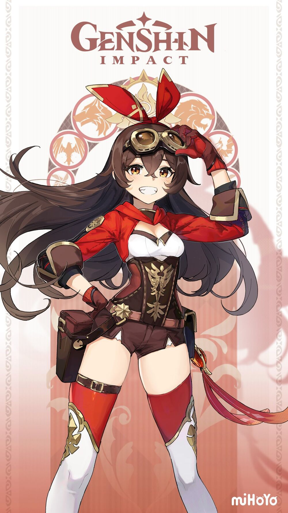

Aloy - Savior From Another World

Amber is a playable Pyro character in Genshin Impact.
As the only remaining Outrider of the Knights of Favonius, she is always ready to help the citizens of Mondstadt — whether it be something simple or perhaps a more challenging task.
Rarity: 4 Stars
Weapon: Bow
Vision: Pyro
Additional Info
Birthday: August 10th
Constelation: Lepus
Region: Mondstadt
Affiliation: Knights of Favonius
Special Dish: Outrider's Champion Steak!